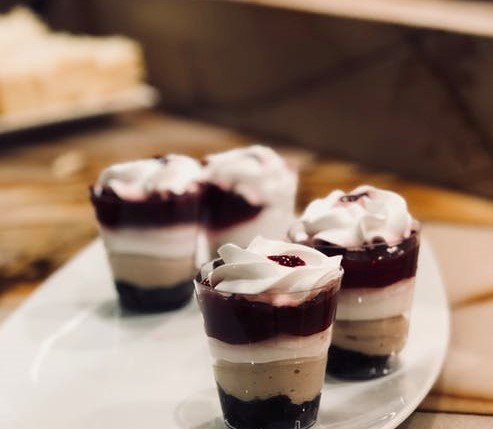

|
Contact |
Vos Avis |
||||||
2 rouleaux de pâte feuilletée
600 g de fraises équeutées et coupées en morceaux
Le jus d’un demi citron
1 jaune d’œuf
2 cl de lait
2 sachets de sucre vanillé
3 c à s de sucre en poudre
1 c à c de menthe en poudre
Préchauffez le four à 180°C.
Dans un saladier, mélangez les fraises équeutées et coupées avec le jus de citron, le sucre, le sucre vanillé et la menthe.
Dans un plat à gâteaux, déposez une pâte feuilletée. piquez la à l’aide d’une fourchette.
Remplissez la pâte de fraises.
Étalez la deuxième pâte feuilletée et coupez y des petits cœurs à l’aide d’un emporte pièce.
Déposez ensuite délicatement cette pâte sur le mélange de fraises, et fermez les 2 pâtes hermétiquement.
Dans un bol, mélangez le lait avec le jaune d’œuf, et couvrez le dessus de la pâte feuillée avec ce mélange avec un pinceau.
Mettez au four pour 40 minutes. Le mélange doit bouillonner et la pâte avoir pris une jolie teinte dorée.
400 ml de lait de noix de coco
250 ml de lait
80 grs de sucre ou selon le gout je me souviens avoir mise 6 c a soupes ma belle fille goutais a chaque fois le melange,
jusqu'a avoir eu le bon gout pas trop sucrer, donc vaut mieux que vous tester le gout, avant l'ajout des oeufs bien sur.
4 œufs
nappage caramel prêt ou 150 gr de sucre converti en caramel.
Préchauffer le four à 180°C
Dans un saladier, mettre les œufs, le lait, le sucre et le lait de noix de coco
Mélanger bien le tout .
Versez dans un moule à cake, un peu de nappage caramel puis verser la préparation du flan .
Mettre à cuire au bain marie pendant 30 a 45minutes (ou selon votre four)
Laisser refroidir le flan dans son moule
placer le au frigo jusqu' au moment de servir.
pour le démouler , passer la lame d'un couteau sur les côtés .
200 g de farine de blé
100 g de sucre glace
80 g de beurre
1 œuf
1 pincée de sel
2 ½dl d’eau
1pincée de sel
30g de beurre
3cs de maïzena délayées dans 3 cs d’eau froide
120g de sucre
2 jaunes d’œufs frais
3 citrons bio, un peu de zeste râpé et 1 dl de jus
un peu de sucre glace
Préchauffez le four à 200°C.
Confectionnez votre pâte à tarte en versant dans un saladier la farine de blé tamisée, le sucre glace et le sel.
Ajoutez le beurre ramolli et coupé en morceaux.
Ensuite, pétrissez la pâte à la main, du bout des doigts puis ajoutez l’œuf entier et malaxez pour obtenir une belle boule de pâte homogène.
Couvrez-la de film alimentaire et réservez-la pendant 2 heures au réfrigérateur.
À l’aide d’un rouleau à pâtisserie, étalez la pâte à tarte entre deux feuilles de papier sulfurisé légèrement farinées.
Abaissez la pâte sur 3 mm d’épaisseur et foncez un moule à tarte préalablement beurré et fariné.
Piquez la pâte avec une fourchette, recouvrez le fond d’un disque de papier sulfurisé et garnissez-le avec des billes de cuisson.
Enfournez le fond de pâte pour le cuire à blanc pendant 10 min à 200°C. Baissez le four à 180°C et poursuivez la cuisson pendant 15 min.
Laissez la pâte à tarte refroidir sur une grille.
Dans une casserole, portez à ébullition l’eau avec le sel et le beurre.
Mélangez la maïzena avec le sucre et les jaunes d’œuf et ajouter ce mélange au liquide frémissant en remuant avec un fouet.
Portez à ébullition tout en remuant, réservez.
Ajouter le zeste et le jus de citron, verser la garniture encore chaude sur le fond de pâte et laisser refroidir.
Mettrez la tarte au moins 2 h au réfrigérateur avant de servir.
Saupoudrez de sucre glace.
3 oeufs
75 ml d'huile de tournesol
125 gr de sucre
200 gr de farine
1 citron ou une gousse de vanille
1 demi-sachet de levure
1 yaourt nature
33 cl de crème liquide entière
Fraises
Sucre vanillé
Sucre glace
Séparez les blancs des jaunes, et dans un grand bol, fouettez les jaunes avec le sucre jusqu'à ce que le mélange blanchisse et soit bien lisse
Ajoutez le zeste d'un demi-citron ou des graines de gousse de vanille et mélangez
Ajoutez l'huile et mélangez
Puis le yaourt et mélangez
Tamisez alors la farine et la levure, que vous incorporez au mélange précédent
Montez les blancs en neige et ajoutez-les au mélange délicatement
Disposez dans un moule de 20 à 22 cm de diamètre et enfournez dans le four préchauffé pendant 35 à 40 minutes à 180 °
Laissez refroidir sur une grille
Prenez 2 gâteaux au yaourt et découpez-les horizontalement en deux pour obtenir 4 couches
Fouettez la crème bien froide et ajoutez y le sucre dès qu'elle commence à prendre pour obtenir une crème chantilly
Sur un plat de service, disposez une couche de gâteau puis une couche de crème fouettée et rajoutez des morceaux de fraises jusqu'au bord afin qu'ils soient visibles
Recouvrez par un autre disque de gâteau, de la crème et des fraises et renouvelez l'opération en finissant par une couche de gâteau
Avant de servir, saupoudrez généreusement de sucre glace!
225 g de farine
140 g de beurre
85 g de sucre
1 zeste de citron
2 jaunes d’œufs
Sel
1 noix de beurre
1 pomme golden, pelée et coupée en quartiers
4 pommes Braeburn, pelées et coupées en 8
3 cuillers a soupe de cassonade
Le zeste d’1/2 citron
1/2 c. a c. de gingembre
1 poignée de raisins secs
1 jaune d’œuf dilué dans un peu d’eau
Mixez tous les ingrédients de la pâte ensemble.
Beurrée un moule a manqué.
Divisez la pâte en deux boules.
Étalez l’une des deux et déposez la dans le moule. Mettez le moule et l’autre boule au réfrigérateur.
Dans une poêle, mélangez les pommes, le sucre, le zeste, le gingembre, les raisins et une cuiller a soupe d’eau.
Laissez cuire a feu doux 5 minutes puis laissez refroidir.
Sorte le moule du réfrigérateur, déposez
les pommes sur la pâte. Étalez la deuxième boule de pâte. Étalez du jaune d’œuf sur le bord des deux pâtes,
puis posez la deuxième pâte sur les pommes, etc appuyez sur les bords pour la faire coller sur l’autre pâte.
Dorez la surface avec le reste du jaune d’œuf.
Faites quelques incisions sur le dessus et mettez au four pour 50 minutes.
140 g biscuits (sablés, spéculos ou autres)
70 g de beurre
850 g de cream cheese (j’ai pris du Elle&Vire)
90g de crème fraîche épaisse
100 g de sucre
2 sachets de sucre vanillé
1/2 cc de vanille en poudre (ou extrait de vanille)
3 oeufs
2 jaunes d’oeuf
Pour servir :
Framboises fraîches
Coulis de framboises
Préchauffez votre four à 160°C.
Émiettez les biscuits et mettez-les dans un saladier.
Ajoutez-y le beurre fondu et mélangez bien.
Étalez le mélange au fond d’un moule amovible et tassez bien.
Mettez de côté.
Mélangez le fromage et la crème fraiche, jusqu’à ce que le mélange soit bien lisse.
Ajoutez le sucre, le sucre vanillé et la vanille et mélangez.
Ajoutez les oeufs entiers et mélangez jusqu’à obtenir un mélange homogène puis ajoutez les jaunes et mélangez à nouveau.
Versez dans le moule, sur le mélange beurre/gâteaux.
Enfournez, au bain marie et laissez cuire pendant 1 heure.
Éteignez ensuite votre four et laissez reposer le cheesecake dedans jusqu’à ce que le four refroidisse complètement.
Sortez-le puis mettez-le au frais au moins une nuit.
Le lendemain, versez le coulis de framboises sur le cheesecake et décorez avec des framboises fraîches.
150 g de sucre
150 g de farine
100 g de beurre
50 g d'huile de noisette ou de noix
1 c. à café d'extrait de vanille
2 oeufs
200 g de chocolat noir à pâtisser
1 pincée de bicarbonate et 1 pincée de sel
100 g de fruits secs (noix, noisettes, noix de pécan...)
Remarque : si vous préférez n'utiliser que du beurre, utilisez 150 g de beurre au total
Coupez le chocolat en morceaux, mettez-le dans un grand bol allant au micro-ondes avec le beurre aussi coupé en morceaux.
Faites fondre 1 minute 30, lissez avec un fouet et ajoutez l'huile
Dans un autre bol, fouettez les oeufs, le sucre, la vanille jusqu'à obtenir un mélange bien mousseux, puis ajoutez le mélange de chocolat
Ajoutez alors le bicarbonate, le sel et la farine. Mélangez, il faut que ce soit homogène
Hachez les noix grossièrement, et ajoutez-les à la préparation
Versez dans un moule beurré carré ou rond (environ 20cm) et saupoudrez avec un peu de noix que vous aurez réservé
Enfournez 25 minutes à four préchauffé à 180°C
32 cuillères de biscuits à la cuillère
53,5 g de cacao amer ou poudre de cacao non sucrée
106,5 g de sucre roux
2,5 sachets de sucre vanillé
2,5 tasses de café
333,5 g de mascarpone
4 oeufs
Séparez les blancs et les jaunes.
Fouettez les jaunes avec le sucre et le sucre vanillé.
Ajoutez le mascarpone préalablement assoupli et fouettez.
Battez les blancs en neige et incorporez-les délicatement au mélange jaunes-sucre-mascarpone.
Imbibez les biscuits dans le café tiédi.
Commencez par tapisser le fond d'un plat type plat à gratin avec une couche de biscuits imbibés.
Ajoutez la moitié de la crème mascarpone puis recouvrez d'une seconde couche de biscuits.
Ajoutez le reste de la crème, couvrez avec du papier film et réservez au frais.
Au moment de servir, saupoudrez de cacao.
6 gros oeufs
150 g de sucre
150 g de chocolat noir corsé
120 g de beurre
100 g de farine
1 pincée de sel
100 g chocolat noir corsé
25 cl de crème fraîche liquide
200 g de sucre glace
1 œuf
Séparez les blancs des jaunes d’oeufs.
Dans un saladier, mélangez les jaunes avec 100 g de sucre en poudre.
Faites fondre le chocolat et le beurre coupés en morceaux au bain-marie.
Dès que le beurre et le chocolat sont fondus, ajoutez-les aux jaunes en fouettant continuellement jusqu’à obtenir un appareil lisse et brillant.
Montez les blancs en neige avec la pincée de sel.
Quand ils commencent à être bien blancs et mousseux, ajoutez le restant de sucre tout en continuant de fouetter pour serrer les blancs.
La meringue doit être bien ferme, lisse et brillante.
Ajoutez un tiers de la meringue dans l’appareil chocolaté et mélangez bien pour assouplir.
Puis incorporez délicatement à l’aide d’une spatule souple le reste de la meringue.
Saupoudrez la farine tamisé sur l’appareil puis incorporez à l’aide de la spatule en soulevant la masse sans trop travailler la préparation.
Versez la préparation dans un moule à manqué beurré.
Faites cuire 50 min dans le four préchauffé à 150°C. En sortant du four vérifiez la cuisson en plantant la lame d’un couteau qui doit ressortir sèche.
Démoulez délicatement le gâteau et laissez-le refroidir complètement sur une grille. (L’idéal est de le faire la veille)
Mettez la crème, le chocolat et le sucre dans une casserole sur feu très doux. Remuez jusqu’à ce que le chocolat et le sucre soient bien fondus.
Augmentez le feu et laissez cuire pendant 5 min sans remuer.
Dans un bol battez l’oeuf et ajoutez 3 cuillerées à soupe de sauce au chocolat. Fouettez puis versez dans la casserole.
Faites cuire en mélangeant constamment comme une crème pâtissière jusqu’à obtenir une consistance qui nappe la cuillère.
Mixez la confiture d’abricot afin qu’elle soit lisse et réservez.
A l’aide d’un grand couteau, découpez la partie supérieure du gâteau afin de l’égaliser.
Puis coupez le gâteau en deux dans le sens de la hauteur afin d’obtenir 2 étages.
Disposez une grille au dessus d’une assiette et posez la partie inférieur du gâteau dessus.
Garnissez avec la confiture d’abricot.
Posez la partie supérieure du gâteau par dessus puis placez le tout au congélateur 30 min.
A la sortie du congélateur versez le glaçage dessus.
Il est préférable de laisser couler le glaçage et de ne pas utiliser de spatule pour ne pas faire de marque.
|
Welcome Contact Us |
 |
Apostolia Nasiopoulou Katapola, Amorgos 84008, Greece +30 22850 71554, +30 22850 74178 +30 22850 71554 info@sweets.com |
 |